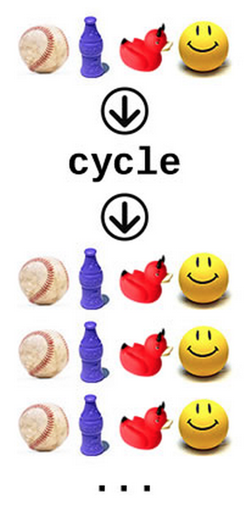
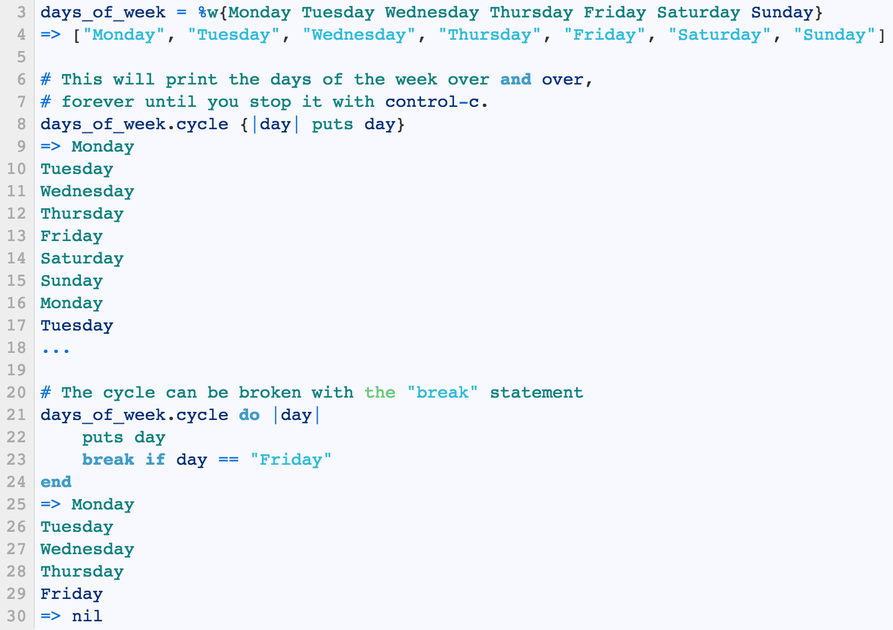
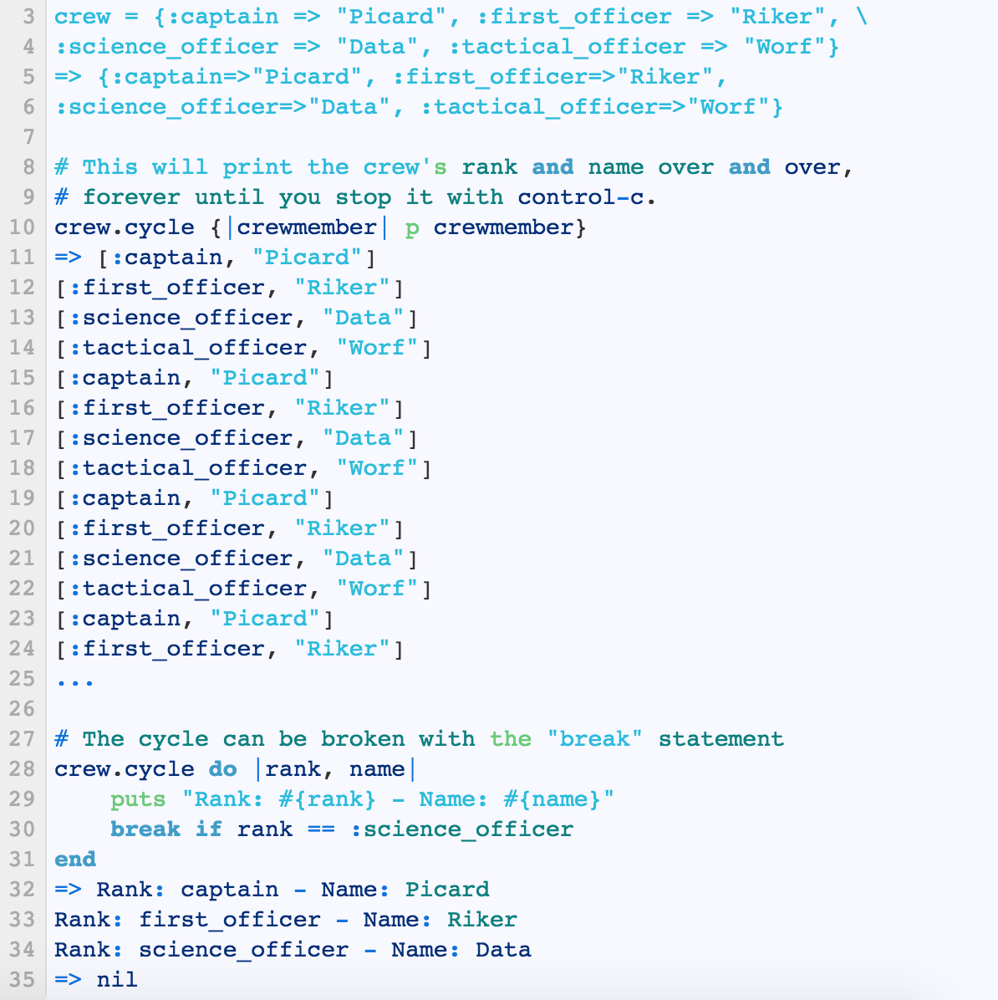

Have you seen the Disney movie, 'Wall-E'? It tells a story about an adorable robot that spends all of its time going through 'each and every' piece of waste because it is commanded to do so. Wall-E, the robot, is also incredibly skilled at 'sorting' the pile of garbage. One day Wall-E finally finds a form of life on deserted Earth and... blah blah. Not important. Do you see where I'm getting at? Enumerables are like our Wall-E! We can use the enumerables to iterate over, or go through each and every element of, a given collection class (i.e. an array or a hash) and tell it to run a block of code while they are at it. Enumerables can also sort them by size, alphabetically, lexicographically, randomly, etc. There are just so many different types of useful enumerables out there. In this blog, I will specifically cover Enumerable#cycle.
What does a cycle do? What does the word 'cycle' mean? Yup, it cycles. It repeates over and over an operation or a block of code, much like so:

Enumerable#cycle sets each element as an object, then passes and calls a block to each element -- repeatedly. It looks something like: .cycle {|x| puts x}. The cycle will iterate through each element forever until it is interrupted with a break statement. Here is an example of an array being called by .cycle:
Notice how the cycle keeps going until we call the break to it?Just like the arrays, we can call .cycle on hashes. Each key and value of the hash will be passed to the block. This also will repeat over and over without stoppage until the break statement. A picture is worth more than a thousand words.

Not difficult at all, huh? Always keep this enumerable in mind for situations where you might need to repeate a block run over and over and over and over and over and over and over again.